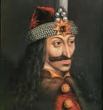

The Origins of Dracula
As bats flap through the musty castle, a coffin lid creaks open and an ashy white hand gropes for the cover. The lid slides off and a caped figure rises in the gloom - Dracula is on the prowl! Vampires have enthralled generations of readers and moviegoers; and the most popular 'vampire' is the fearsome Count Dracula of Transylvania.
Of course, these blood-sucking monsters do not exist and are merely the figment of our imagination.
British writer, Bram Stoker(shown at left), created the Dracula myth for his 1897 horror novel, 'Dracula'. Many historians believe that Bram's Dracula was inspired by a 15th century Romanian ruler named Vlad Tepes (pronounced "tsep-pesh" and shown below).
Vlad ruled Wallachia (now part of Romania - in southeastern Europe) more than 600 years ago and is believed to have been very, very cruel. Vlad wasn't a vampire at all, but he did invent some spine-chilling forms of torture and used the nickname "Dracul" or "Dracula" which means both "devil" and "dragon."
In the 21st century, Vlad's terrible reputation is coming in handy for a cash-starved country. For the past few years, Romania has been cashing in on the Dracula myth by organising an annual World Dracula Congress in the city of Sighisoara. The birthplace of Tepes, Sighisoara is part of a larger region called Transylvania in western Romania.
The festival sees the screening of vampire movies; and fans, moviemakers, writers and history students from all over the world participate.
Discussions are held on Dracula legends, and debates on vampire myths are hotly contested. The festival is a huge tourist attraction and small Dracula souvenirs, including tiny coffin shaped boxes and bottles of blood red wine, are sold for profit.
The residents of Transylvania are now hoping that the next step will be a Dracula theme park. Looking to boost the economy of the country, the Romanian government has made the theme park a top priority and negotiations are currently underway with foreign investors.
Bram Stoker

Vlad Tepes